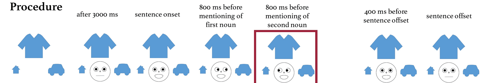
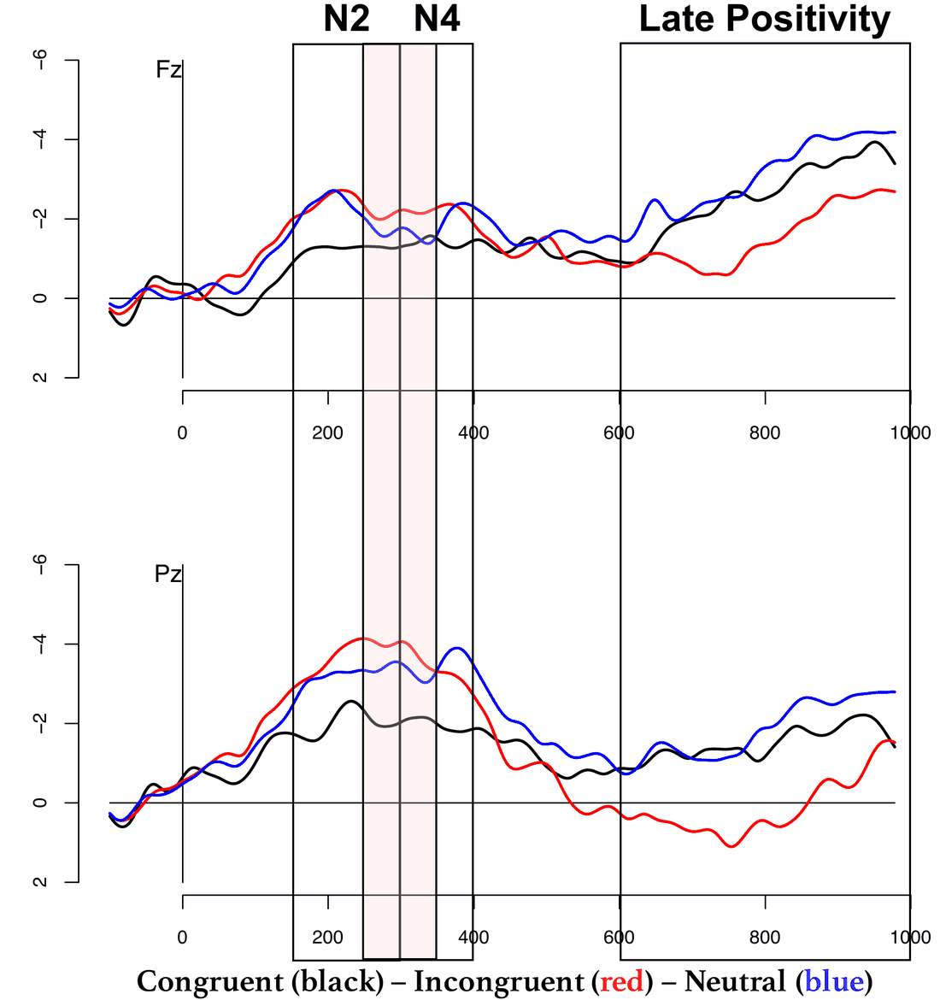
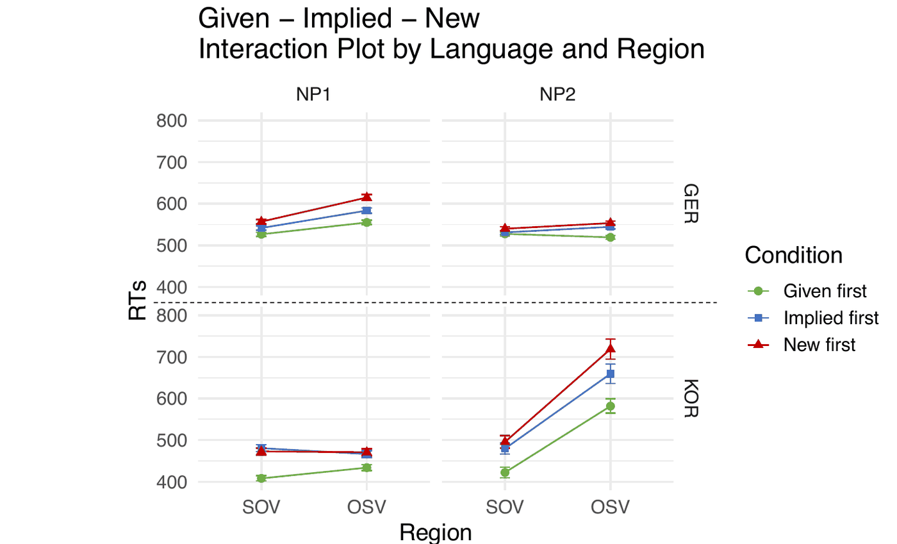

研究
文脈の中の言語理解
言語理解は、単語を受け身で解読するだけの作業ではありません。聞き手や読み手は、目の前の状況、話者、談話、そして母語の文法を手がかりに、次に来るものを絶えず予測しています。私の研究では、どの手がかりがこうした予測を生み出すのか、それがいつ使われるのか、そして予測が裏づけられたり裏切られたりしたときに何が起こるのかを問いています。
話者の視線と指示対象の予測
対面の会話では、話し手は物の名前を口にする少し前に、その物へ視線を向ける傾向があります。聞き手はこれを利用できます。家に視線が向けば、次に来る語として「家」が予測されるのです。一連の脳波（EEG）実験では、文が進む間に仮想の話者が複数の物のうち一つを見ました。その視線は、後に続く名詞と一致する場合、矛盾する場合、視線がない場合の三通りでした。
事象関連電位（ERP）からは、聞き手が視線の手がかりを即座に利用していることがわかります。名詞と一致しない視線は、数百ミリ秒以内に名詞に対する脳の反応を変化させ、さらに後の成分は、聞き手が状況についての理解を更新していることを示唆しています。2023年の Cognition 論文では、視線が予想外の物を指したとき、脳は視線の手がかりそのものに反応し（N400、P300）、続く名詞に対する効果は弱まることを示しました。聞き手は、話者の視線をコミュニケーション信号の不可欠な一部として扱っているのです。


語順、既知性、そして「予測優先」の原理
語順が比較的自由な言語では、目的語が先に来る文は処理が難しくなり、また読み手は既出の情報が新出の情報より先に来ることを好みます。予測に基づく理論は、この両方を説明します。基本語順や「既出が先、新出が後」という順序は、単に予測しやすいからです。共同研究センター SFB 1102 の C3 プロジェクトで現在進めている研究では、さらに踏み込んだ主張を検証しています。理解する側は文頭の名詞句についての予測に大きく依存しており、それが予測と食い違うたびに処理コストが生じる、という主張です。
ドイツ語の自己ペース読文実験（HSP 2024）では、語順と三段階の既知性（既出・推論可能・新出）を操作しました。主題や主語の省略が頻繁に起こる韓国語で行った並行実験からは、同じ予測の仕組みが、格標示や項の省略のあり方によって異なる形で現れることがわかりました。

共同研究とこれまでの研究
共同研究では、議論中の問い（Question under Discussion）が談話上の予測にどう影響するか（ERP）、予測に基づく新しい語の学習における年齢差、そして情報量が話し手の指示対象の言及順序にどう影響するかを研究してきました。
修士論文では、発話の終わりの予測における韻律と視線についての共同研究を踏まえ、ドイツ語・英語・日本語で韻律が話者交替の手がかりとして機能するかを検討しました。学士論文と言語処理学会第20回年次大会（NLP2014）での発表では、英語のフォーラム投稿を日本語に機械翻訳するための前編集ルールを扱いました。
研究手法
研究の進め方
- 脳波 / 事象関連電位（ERP）視覚的・音声的な文脈の中で提示される語に対する、時間的に同期した脳の反応。
- 自己ペース読文課題と反応時間統制された実験計画における、語ごとの処理コスト。
- 言語間比較ドイツ語・韓国語・英語・日本語での並行実験。
- 混合効果モデルJulia と R による線形混合効果モデル。データは OSF で公開しています。